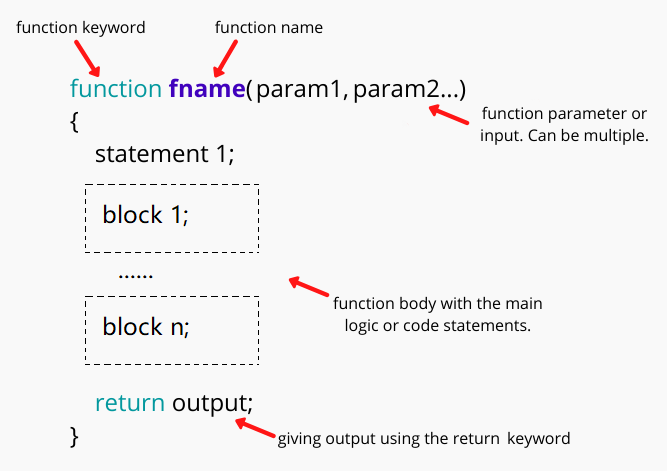
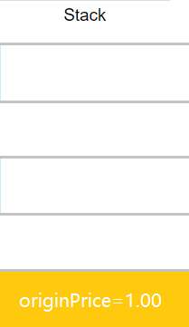
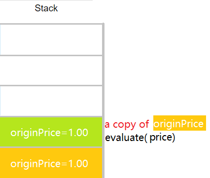
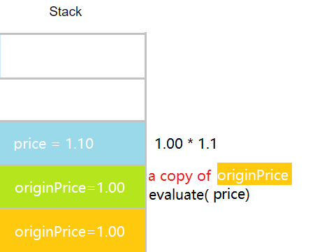
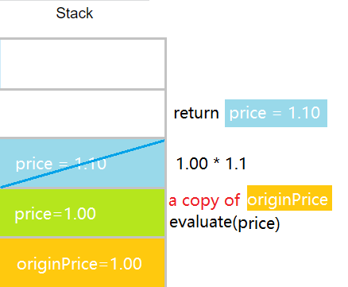
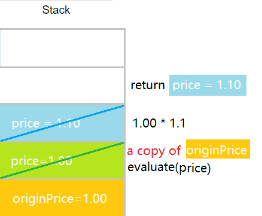
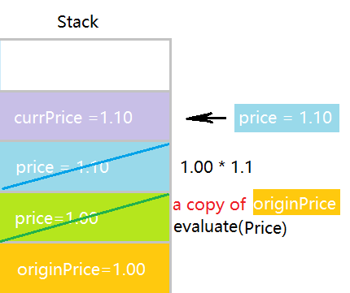
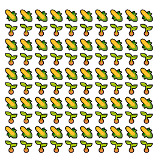
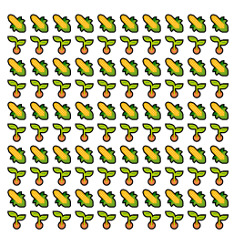

🌝 Lecture Highlights
- Top-Down Design Pattern for a Sub-algorithm
- Call Sub-algorithm Example: Help Old Mcdonald Inter-plant Crops
- Tracing the Algorithm
- Variable Scopes: let, const, var
🌚 pondering01: Structure of A JavaScript Function
🌚 pondering02: Parameter of Primitive Types: Pass by Value
There are 7 primitive data types: string, number, bigint, boolean, undefined, symbol, and null. In JavaScript, all function arguments are always passed by value. It means that JavaScript copies the values of the variables into the function arguments. Any changes that you make to the arguments inside the function do not reflect the passing variables outside of the function. In other words, the changes made to the arguments are not reflected outside of the function.
How the script works.
1) declare the variable originPrice and initialize its value to 1.00 million:
2) define a evaluate() function that accepts an argument--price.
3) pass the variable-originPrice into the evaluate() function. When passing the variable originPrice to the evaluate() function, JavaScript copies originPrice value to the variable-price.
4)The function assigns the price * 1.10 to the argument-price.
5)the evaluate() function changes the variable-price. However, it does not impact the value of the variable-originPrice because price and originPrice are separate variables. When exiting the function evaluate(), the value of the variable-originPrice does not change after the evaluate() function completes.
 6)evaluate() assign the return value price to the variable-currPrice.
🌚 pondering03: Call Sub-Algorithm Example
draw a flowchart to judge whether an input number is a perfect number.
A perfect number is a positive integer that is equal to the sum of its positive divisors, excluding the number itself.
For instance, 6 has divisors 1, 2 and 3 (excluding itself), and 1 + 2 + 3 = 6, so 6 is a perfect number.
Hint: At the design stage, focus on the main algorithm first, abstract the sub-algorithm into merely a function name.
Meditation In Depth
It is the descriptive name of the sub-algorithm that make the program easier to understand. Hence the name of the sub-algorithm is very important. There exist many well-known function prefixes like create…, show…, get…, check… and so on. Use them to hint what an algorithm does.
🌚 pondering04: Why do we need to call subalgorithm?
1. Avoid Code Duplication
Jeremy Clarkson is going to interplant potatos and corns to increase the productivity.
That field has 10 field ridges, each ridge is of 10 plants' length.
In HTML, potato is represented by  , corn is represented by
, corn is represented by  

Q1.Draw a flowchart without calling subalgorithm.
Q2. Draw another flowchart by calling a subalgorithm "plantRow(vegetableName)"
Q3.If Clarkson is going to adopt one of the two algorithms to design and draw the blueprints for all fields in his farm, which one would he use? Why?
See the Pen ctc4-subalgorithm-interplant-duplication-quest by eecs1012 (@eecs1012) on CodePen.
2.Improve the Readability of the Code
Q1.Draw a flowchart without calling a subalgorithm: Given an array of integers, output the numbers that are perfect numbers.
Q2.Improve the flowchart by calling a subalgorithm: isPerfectNum(number)
Meditation In Depth
Whenever you see the same computation multiple times in a program, you should create a separate (helper) function for that computation and call that function instead. This enables you edit the program in only one place if something changes.